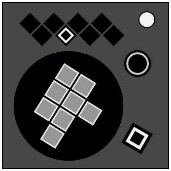

On the Subject of Octomino
Who said a polyomino had to take up only two dimensions?
| Color offset value | |
|---|---|
| Red | Strikes |
| Yellow | Stage number |
| Green | Solve count |
| Cyan | Indicators |
| Blue | Ports |
| Purple | Total modules |
| Magenta | Batteries |
| White | SN last digit |
| Offset direction | |
|---|---|
| Right | |
| Left | |
Determine a starting button and an ending button, whose colors determine a starting and ending position within the net below, to which you must navigate a path.
The ending button and ending position will always be the color of the initially lit tile at the top.
The starting button is determined by finding an offset from the ending position based on the color of the ring of the circular button at the top right and the button layout. Use the layout of the buttons at the top to determine whether the direction in which you count your offset moves left or right.
To activate the module, press the starting button. A <TBD> second timer will start. The starting button will reveal its color and position within the net upon activation.
Navigate around the net by pressing the button whose color is orthogonally adjacent to your current position. Prioritize unvisited cells. If there are multiple possible navigable unvisited cells, prioritize the cell whose color appears furthest left in the row of buttons. If there are no adjacent unvisited cells, any adjacent cell is navigable.
After visiting all eight cells, navigate to the ending position, then press that button to submit.
The dimensions of the net for each stage change. There are five stages, with a 2D, 3D, 4D, 3D, and 2D net at each stage respectively.
Stages 3, 4, and 5, all share one <TBD> second timer. In Stage 4, the colored ring will contain two colors, to which you must add the values together to determine your offset. In Stage 5, the colored ring will contain three colors.
Hold the top right button to fully reset to Stage 1.